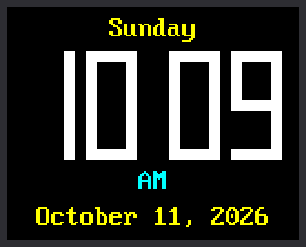

Lab 09: A Digital Clock

Now the kit becomes a real clock. This program shows the hours and minutes in digits big enough to read from across the room. A colon blinks between them once a second. The day of the week goes above the time, and the date goes below it.
Welcome to Lab 09
This is the lab where your kit stops being a gadget and becomes a clock. You will build its big digits yourself, the same way a calculator builds them. Let's make time tick!
What You Will Learn
- where the Pico gets the time from
- how one line of math turns hour 13 into 1 PM
- how to build any digit out of seven bars
- how the clock redraws only the digits that change
Run It
- Open
09-digital-clock.pyin Thonny and click Run. - Check the time against the clock on your computer. They should match.
- Watch the colon. It is on for one second, then off for the next.
Where Does the Time Come From?
The Pico has a built-in clock called the RTC, short for real-time
clock. The program asks it for the time with time.localtime(), which
answers with eight numbers at once:
1 | |
Each name on the left catches one number. The last name, _, catches a
number this clock does not use.
Who set the RTC? Thonny did. Each time Thonny connects to the Pico, it quietly copies the time from your computer.
The Pico Forgets the Time
The Pico has no battery for its clock, so unplugging it sends the RTC back to midnight on January 1st. For now, always start this lab from Thonny. Lab 10 fixes this by asking the internet for the time.
From Hour 13 to 1 PM
The RTC counts hours from 0 to 23. Most clocks show 1 to 12, with AM or PM. One line does the change:
1 | |
hour % 12is the first step. The%sign gives the remainder after dividing. 13 ÷ 12 is 1 with 1 left over, so13 % 12is 1.or 12is the second step. Hours 0 and 12 both leave a remainder of 0, but no clock shows a zero hour. Python treats 0 as nothing at all. So0 or 12means: there is nothing here, use 12 instead.
hour |
hour % 12 |
after or 12 |
The clock shows |
|---|---|---|---|
| 0 | 0 | 12 | 12 AM (midnight) |
| 9 | 9 | 9 | 9 AM |
| 12 | 0 | 12 | 12 PM (noon) |
| 13 | 1 | 1 | 1 PM |
| 23 | 11 | 11 | 11 PM |
AM or PM is a simpler test: every hour below 12 is AM.
Digits Made of Seven Bars
Even the kit's biggest font is small for a clock across the room. So this lab builds its own digits, the way a calculator does. Each digit is made of seven bars called segments, named a to g:
1 2 3 4 5 6 7 | |
This part of the program lists the bars to light for every digit:
1 2 3 | |
Count from zero. DIGITS[1] is "bc", so a 1 lights b and c, the two
bars on the right. DIGITS[8] is "abcdefg", so an 8 lights all seven.
A dictionary called SEGMENTS says where each bar sits inside a
digit. You met dictionaries in
chapter 21 of Learning Python.
This function puts the two together:
1 2 3 4 5 6 7 8 9 | |
x = DIGIT_X[position]looks up where this digit starts. Position 0 is the digit on the left.- The first
fill_rectpaints a black box over the old digit. if digit is None: returnstops there and leaves a blank. The clock uses that for the first digit of a time like 9:05.- The
forloop takes the letters for this digit one at a time. It looks up each bar inSEGMENTSand paints it as one filled rectangle.
Only the Digit That Changed
A list called shown remembers the digit in each of the four positions.
A digit is drawn again only when it differs from the one on the screen:
1 2 3 4 | |
This is the rule from lab 07: redraw only what changed. The last digit changes once a minute. Most seconds, nothing moves but the colon.
Try This
- Change
DIGIT_COLOR = config.WHITEtoconfig.GREEN. - Change
THICKNESS = 6to10for chunky digits. Then try2. - Pick a digit that is on your screen right now. In
DIGITS, take one letter out of its pattern. Which bar goes dark? Put the letter back when you finish. - Make a 24-hour clock. Change
hour12 = hour % 12 or 12tohour12 = hour. In the afternoon, 3:42 PM shows as15 42.
If It Doesn't Work
- The shell says
The Pico's clock has not been set.Thonny sets the clock each time it connects. Click Stop to connect again, then Run. If the message comes back, set the clock with lab 10. - A digit has a bar missing. Check the
DIGITSlines for a typing slip. Each pattern needs its quote marks and its comma. - The screen stays blank. Go back to lab 03 and get the display working first.
It's a Real Clock!
You turned 24-hour time into AM and PM with % and or. You built
ten digits out of just seven bars. Next, your clock learns to ask the
internet for the time.